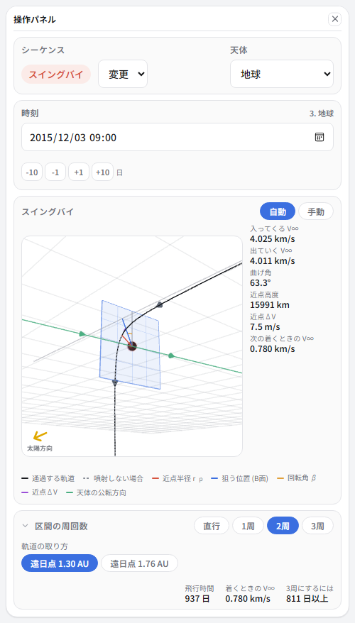
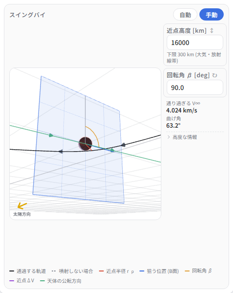
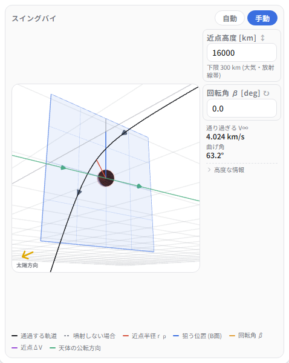
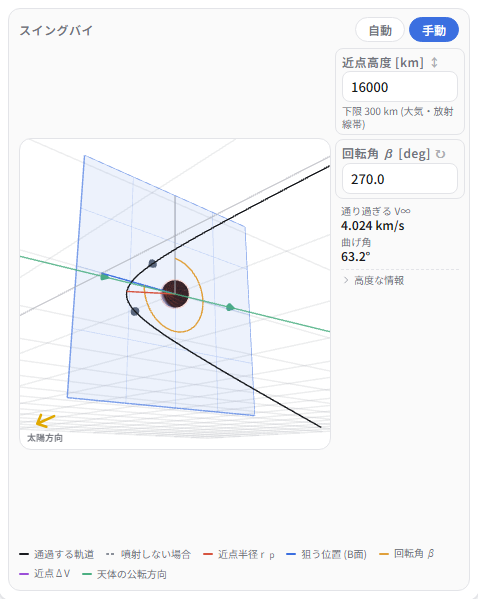
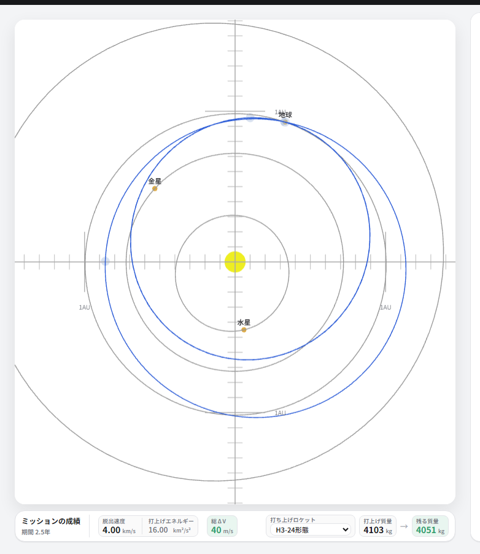
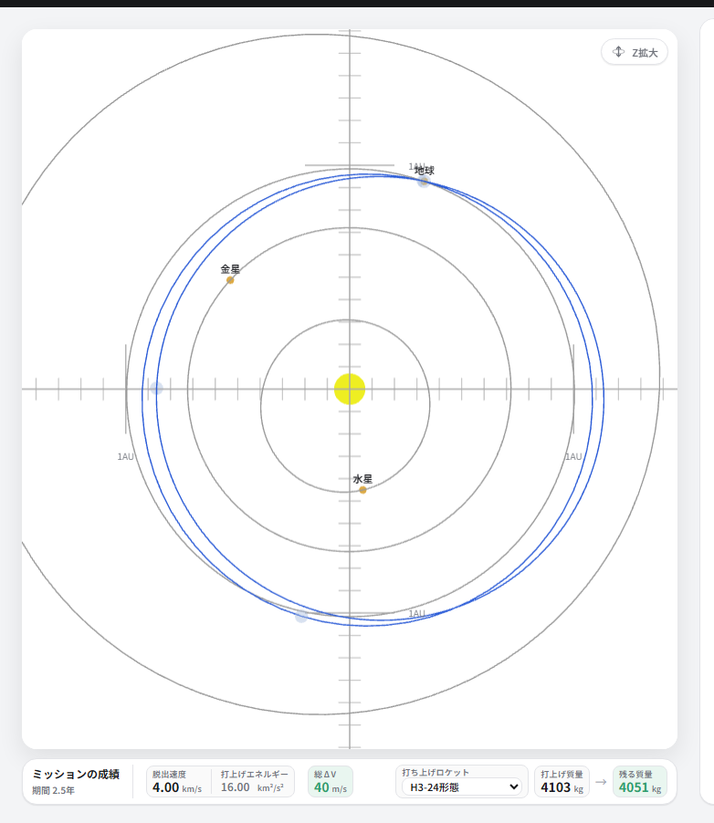
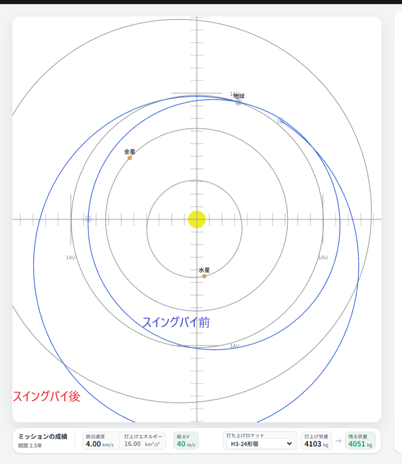

スイングバイ その1: 原理と、どの天体が効くか
燃料を1グラムも使わずに、探査機の速度を秒速数キロ変えてしまう。 何が起きているのか、そしてどの天体をどう使えばいちばん効くのかを、数字で追いかけます。
燃やしていないのに速度が変わる
天体のそばを通ると、重力に引かれて進む向きが曲がります。 ここで大事なのはどこから見るかです。
天体から見ると、探査機は双曲線を描いて近づき、遠ざかります。 来たときと去るときで速さはまったく同じ。変わるのは向きだけです。 重力に引かれて増えた速さは、離れるときにきっちり返します。 灰色の破線が「曲がらなければ進んでいた向き」で、そこからのずれが曲げ角です。
太陽から見ると話が変わります。天体自身が太陽のまわりを走っているので、 探査機の速度は「天体の速度 + 天体から見た速度」になります。 同じ長さのまま向きだけ変えても、足し算の答えは変わる。 この例では 30.06 が 33.43 km/s になりました。これがスイングバイです。
反対側を通れば、同じことが逆に働きます。
入ってくる速さも曲げ角も、さっきとまったく同じです。違うのは曲げる向きだけ。 それだけで 30.06 が 26.25 km/s に落ちます。 増えた 3.37 と減った 3.81 は、どちらも天体との貸し借りです。

加速も減速もできる
上の右の図で、出ていく V∞ の先端は円の上を動きます。 天体の進む向きの側へ回れば速くなり、逆側へ回れば遅くなる。 どちら側を通るかで決まります。
アプリでは、スイングバイのシーケンスに回転角 β という欄があります。 これが「天体のどちら側を通るか」です。 1年で地球に戻ってくる軌道 (V∞ 4.02 km/s) を作り、 近点高度 16000 km は固定したまま、β だけを変えてみます。






近日点が金星の内側まで落ちる
代わりに軌道面が傾く
遠日点が火星の手前まで伸びる
上段が天体のそばの様子 (B面と双曲線)、下段が太陽から見た軌道です。 曲げ角はどれも 63.2度で同じ。変えたのは通る側だけです。
| 回転角 β | 曲げ角 | スイングバイ後の軌道 | 1 AU での速さ | |
|---|---|---|---|---|
| 90° | 63.2° | 0.63 – 1.14 AU | 27.77 km/s | 減速 |
| 0° | 63.2° | 0.86 – 1.14 AU | 29.78 km/s | 変わらない (面が傾く) |
| 270° | 63.2° | 0.86 – 1.71 AU | 32.90 km/s | 加速 |
同じ天体に、同じ速さで、同じ高さを通っているのに、太陽から見た速さは 27.77 から 32.90 km/s まで 5.1 km/s 動きます。 近日点は金星の内側まで落ち、遠日点は火星の手前まで伸びます。
β = 0 で速さが変わらないのは、V∞ の向きの変わり方がちょうど公転方向と直交するからです。 このとき代わりに軌道面が傾きます。実際この軌道は黄道面から 0.13 AU (およそ7度) 浮き上がっています。 面を変えたいときはこちらを使います。
減速も立派な使い道です。水星や太陽に近づくミッションでは、金星や地球で減速して 内側へ落としていきます (チュートリアル②がこれです)。
どれだけ曲げられるか
曲げ角を決めるのは3つだけです。天体の重力 μ、いちばん近づく距離 rp、 そして近づいてくる速さ V∞。
重力が強いほど、近くを通るほど、そして遅いほど大きく曲がります。
遅いほうがよく曲がる、というのが引っかかるところです。 速く通り過ぎれば、重力に引かれている時間が短くなる。それだけのことです。
上が曲げ角、下が太陽から見た速度の変化 |Δv| です。どちらも、 その天体で許されるいちばん近い高度を通ったときの値にしてあります。
注目してほしいのは下のグラフに山があることです。 遅く近づけばよく曲がりますが、曲げる元の速度が小さい。 速く近づけば元は大きいが曲がらない。その釣り合いで、いちばん得をする速さが決まります。
もらえるエネルギー
速度が何 km/s 変わったかより、軌道のエネルギーがどれだけ変わったかのほうが、 どこまで行けるかに直結します。太陽から見たエネルギーの変化は、こう書けます。
つまり速く公転している天体ほど、同じ Δv でも多くもらえます。 単位は km²/s² で、打上げエネルギー C3 と同じ単位です。
曲げ角の山と、公転速度。この2つを掛け合わせたのが次の図です。 横軸はその天体に近づいてくる速さ、縦軸は1回のスイングバイでもらえるエネルギーの上限です。
金星と地球は V∞ 7〜8 km/s で頭打ちになり、そこが 230〜250。 木星はずっと登り続けて、V∞ 34 km/s で 449 に届きます。 これは 1 AU の円軌道から太陽の重力を振り切るのに要る 443.6 を超える量です。 木星スイングバイが探査機を太陽系の外へ放り出せるのは、この桁だからです。
惑星の一覧
すべての惑星について、いちばん近い高度を通ったときの上限を並べます。 「最適 V∞」がその天体の実力を出し切れる速さ、「上限 ΔE」がそのときにもらえるエネルギーです。
| 天体 | 公転速度 | 最低通過高度 | 最適 V∞ | 上限 |Δv| | 上限 ΔE | V∞ 5 | V∞ 10 | V∞ 15 |
|---|---|---|---|---|---|---|---|---|
| 木星 | 13.06 km/s | 35,746 km | 34.4 km/s | 34.4 km/s | 449 | 128 | 241 | 329 |
| 金星 | 35.02 km/s | 300 km | 7.2 km/s | 7.2 km/s | 250 | 235 | 237 | 195 |
| 地球 | 29.78 km/s | 300 km | 7.7 km/s | 7.7 km/s | 230 | 210 | 223 | 187 |
| 土星 | 9.65 km/s | 30,134 km | 20.5 km/s | 20.5 km/s | 198 | 91 | 156 | 188 |
| 水星 | 47.87 km/s | 200 km | 2.9 km/s | 2.9 km/s | 138 | 120 | 74 | 51 |
| 天王星 | 6.80 km/s | 7,668 km | 13.2 km/s | 13.2 km/s | 90 | 59 | 86 | 89 |
| 火星 | 24.13 km/s | 200 km | 3.5 km/s | 3.5 km/s | 83 | 78 | 51 | 36 |
| 海王星 | 5.43 km/s | 7,429 km | 14.6 km/s | 14.6 km/s | 79 | 49 | 74 | 79 |
| 冥王星 | 4.74 km/s | 100 km | 0.8 km/s | 0.8 km/s | 4 | 1 | 1 | 0 |
公転が速いほど、そして重くて小さい (= 近くを通れる) ほど有利です。 金星と地球が上位に来るのは公転が速いから。木星が1位なのは重力が桁違いだからです。 火星と冥王星が下位なのは、重力が小さくて曲げられないからです。
速く近づくほど得か
表の右の3列を見てください。近づく速さで順位が入れ替わります。
- V∞ 5 km/s なら、金星 (235) と地球 (210) が木星 (128) を大きく上回る。
- V∞ 10 km/s で木星 (241) が金星 (237) を抜く。境目は V∞ 9.9 km/s。
- V∞ 15 km/s になると木星 (329) が独走し、金星 (195) は下り坂に入る。
つまり「良い天体に、速く近づく」だけでは足りません。 内惑星は 7〜8 km/s で頭打ちになるので、それ以上速く行っても損をします。 逆に木星や土星は、実際に到達できる速さの範囲ではまだ坂の途中なので、 速く着くほど得になります。
実際のスイングバイはどこにいるか
チュートリアルで作った4つのスイングバイを、上の図に白丸で置いてあります。 曲線 (=最接近したときの上限) からどれだけ下にいるかを見てください。
| スイングバイ | V∞ | 近点高度 | 曲げ角 | もらった ΔE | 最接近していれば | その天体の上限 |
|---|---|---|---|---|---|---|
| ② 金星 (マリナー10号風) | 8.3 km/s | 5,681 km | 33.1° | 166 | 248 | 250 |
| ③ 木星 (ニューホライズンズ風) | 18.5 km/s | 2,260,591 km | 15.7° | 66 | 375 | 449 |
| ④ 地球 (Juno風) | 9.9 km/s | 300 km | 44.2° | 223 | 223 | 230 |
| ⑤ 地球 (はやぶさ2風) | 4.0 km/s | 15,991 km | 63.2° | 126 | 189 | 230 |
④のジュノーだけは曲線のちょうど上に乗っています。 近点高度 300 km、つまり許される最低の高さをそのまま通っているからです。 V∞ 9.94 km/s で得られる最大の 223 を、まるごと受け取っています。
いちばん離れているのが③のニューホライズンズです。 木星の中心から 233万 km のところを通っています。許される最接近は 10.7万 km なので、 その 22倍 も外側です。 同じ速さで最接近していれば 375 もらえたところを、66 しか受け取っていません。
もちろんこれは失敗ではありません。木星のそばには強烈な放射線帯があり、 近づけば探査機が壊れます。それに冥王星へ正しい向きに曲げてもらう必要があって、 もらう量は狙う先で決まってしまいます。 スイングバイは「たくさんもらう」ゲームではなく「必要なぶんを、必要な向きにもらう」ゲームです。
まとめ
- 天体から見れば速さは変わらない。向きだけ変わる。太陽から見ると天体の速度が足されるので速さが変わる。
- 天体のどちら側を通るか (回転角 β) で加速にも減速にもなる。同じ条件でも 5.1 km/s の幅がある。
- 遅いほどよく曲がるが、曲げる元が小さい。いちばん得なのは V∞ = √(μ/rp)、曲げ角ちょうど60度のとき。
- もらえるエネルギーは公転速度 × Δv。金星・地球は 7〜8 km/s で頭打ち、 木星は 34 km/s まで伸びて 449 に届く。
- だから、遅い探査機なら内惑星、速い探査機なら木星。境目は V∞ 9.9 km/s あたり。
その2への橋渡し: V∞ を上げてから使う
ここまでで、金星と地球がスイングバイの相手として優秀なことが分かりました。 公転が速く (35.0 と 29.8 km/s)、大気のすぐ上まで近づけるからです。 そして実力が出るのは V∞ 7〜8 km/s のとき、ということも。
ここでもう1つ、効いてくる上限があります。 スイングバイを出たあとの速さは、どうがんばっても 「天体の公転速度 + V∞」を超えられません。 V∞ をぜんぶ公転方向に向けたときがその値で、それ以上には足せないからです。
| 速さ | |
|---|---|
| 1 AU から木星へ向かうのに要る速さ | 38.58 km/s |
| 地球の公転速度 | 29.78 km/s |
| → 地球スイングバイで木星へ放り出してもらうのに要る V∞ | 8.79 km/s 以上 |
ところが、地球を素直に出発して1年ほどで地球に戻ってくると、 V∞ は 5 km/s 前後にしかなりません。上限は 29.78 + 5.3 = 35.08 km/s。 どんなに上手に曲げてもらっても木星には届きません。
だから、地球に戻る前に V∞ を上げておく必要があります。手は2つ。
- 途中で噴射して上げる。チュートリアル④の ジュノーがこれで、670 m/s の噴射で戻ってくるときの V∞ を 5.3 から 9.9 km/s へ引き上げました。 上限は 39.68 km/s になり、木星に届きます。これが ΔVEGA です。
- 先に別の天体を使って上げる。金星は V∞ 5 km/s でも 235 もらえて、 同じ条件の地球 (210) より効率のよい「V∞ の増幅器」です。 これを挟むのが VEGA、地球を2回使うと VEEGA になります。